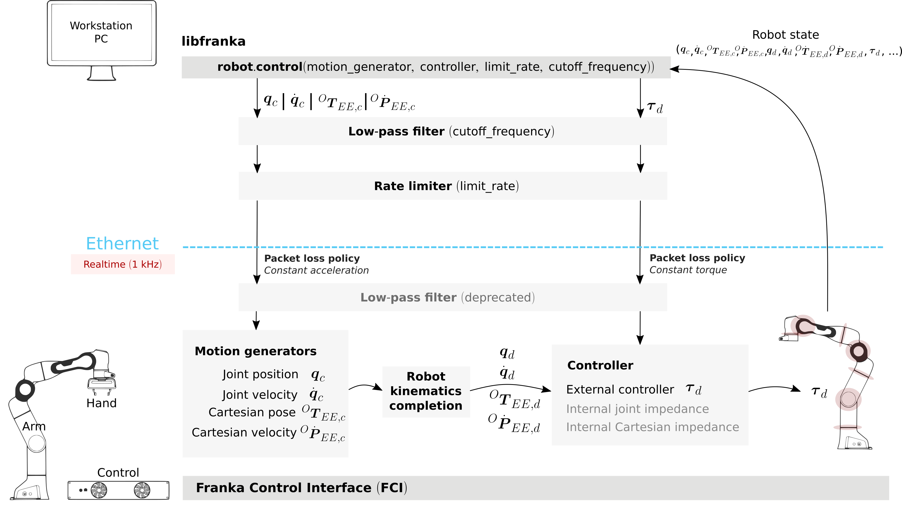
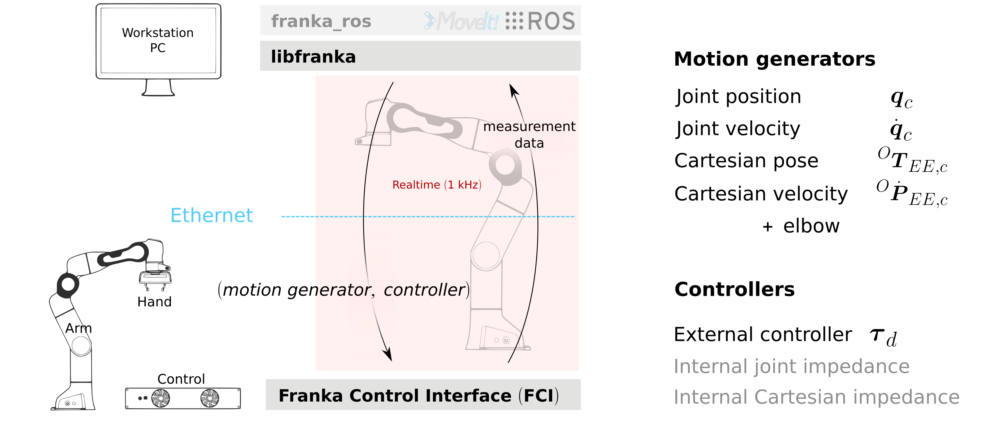

franka、汇川、非夕、珞石控制方式
1. FRANKA机器人
1.1 控制流程
通过control函数下发力矩控制器和运动规划器进行力位混合控制，两者都是回调函数，每1ms执行1次。
运动规划器规划位置或速度，将结果交给力矩控制器计算出最终的下发转矩。
由于只有阻抗模式和纯转矩模式，因此最终下发的都是转矩。

1.2 控制器与规划器搭配方式

| 运动规划模式(Motion Generators) | 力矩控制器模式(Controllers) |
|---|---|
| 无（纯转矩模式） | 外部转矩 |
| 关节位置 | 外部转矩 |
| 关节速度 | 外部转矩 |
| 笛卡尔位置 | 外部转矩 |
| 笛卡尔速度 | 外部转矩 |
| 关节位置 | 关节阻抗 |
| 关节速度 | 关节阻抗 |
| 笛卡尔位置 | 关节阻抗 |
| 笛卡尔速度 | 关节阻抗 |
| 关节位置 | 笛卡尔阻抗 |
| 关节速度 | 笛卡尔阻抗 |
| 笛卡尔位置 | 笛卡尔阻抗 |
| 笛卡尔速度 | 笛卡尔阻抗 |
1.3 上位机API
支持C/C++，ROS，Matlab编程
2. 汇川工业机器人
汇川工业机器人的控制拓扑为：上位机->{控制器->硬Enthercat主站}->驱动器
EtherCAT的同步周期为0.5ms，控制器的计算周期为2ms，发送给主站，主站内进行4次插值。
汇川上位机API支持VB、VC、C#、LabView等程序语言，主要是位置控制。
3. 汇川U8
控制拓扑与工业机器人相同
正常情况下CSP模式
示教模式使用CST模式，需要两种控制方式切换，CST模式是否插值不清楚
4. 非夕
| RT joint torque control mode | |
| RT joint impedance control mode | |
| RT joint position control mode | |
| RT Cartesian motion-force control mode | |
| NRT joint impedance control mode | |
| NRT joint position control mode | |
| NRT Cartesian motion-force control mode | |
| Primitive execution mode | |
| Plan execution mode | |
| Idle mode |